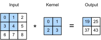

%load_ext d2lbook.tab
tab.interact_select(['mxnet', 'pytorch', 'tensorflow', 'jax'])Convolutions pour les images
Maintenant que nous comprenons le fonctionnement théorique des couches convolutives, nous sommes prêts à voir comment elles fonctionnent en pratique. En nous basant sur notre motivation des réseaux de neurones convolutifs en tant qu’architectures efficaces pour explorer la structure des données d’image, nous conservons les images comme exemple fil rouge.
%%tab mxnet
from d2l import mxnet as d2l
from mxnet import autograd, np, npx
from mxnet.gluon import nn
npx.set_np()%%tab pytorch
from d2l import torch as d2l
import torch
from torch import nn%%tab jax
from d2l import jax as d2l
from flax import linen as nn
import jax
from jax import numpy as jnp%%tab tensorflow
from d2l import tensorflow as d2l
import tensorflow as tfL’opération de corrélation croisée
Rappelons que strictement parlant, les couches convolutives sont un abus de langage, car les opérations qu’elles expriment sont plus précisément décrites comme des corrélations croisées. D’après nos descriptions des couches convolutives dans la sec_why-conv, dans une telle couche, un tenseur d’entrée et un tenseur de noyau sont combinés pour produire un tenseur de sortie via une (opération de corrélation croisée.)
Ignorons les canaux pour l’instant et voyons comment cela fonctionne avec des données bidimensionnelles et des représentations cachées. Dans la fig_correlation, l’entrée est un tenseur bidimensionnel d’une hauteur de 3 et d’une largeur de 3. Nous notons la forme du tenseur comme \(3 \times 3\) ou (\(3\), \(3\)). La hauteur et la largeur du noyau sont toutes deux de 2. La forme de la fenêtre du noyau (ou fenêtre de convolution) est donnée par la hauteur et la largeur du noyau (ici, elle est de \(2 \times 2\)).

Dans l’opération de corrélation croisée bidimensionnelle, nous commençons par positionner la fenêtre de convolution dans le coin supérieur gauche du tenseur d’entrée et nous la faisons glisser sur le tenseur d’entrée, de gauche à droite et de haut en bas. Lorsque la fenêtre de convolution glisse vers une certaine position, le sous-tenseur d’entrée contenu dans cette fenêtre et le tenseur de noyau sont multipliés élément par élément et le tenseur résultant est sommé pour donner une valeur scalaire unique. Ce résultat donne la valeur du tenseur de sortie à l’emplacement correspondant. Ici, le tenseur de sortie a une hauteur de 2 et une largeur de 2 et les quatre éléments sont dérivés de l’opération de corrélation croisée bidimensionnelle :\[ 0\times0+1\times1+3\times2+4\times3=19,\\ 1\times0+2\times1+4\times2+5\times3=25,\\ 3\times0+4\times1+6\times2+7\times3=37,\\ 4\times0+5\times1+7\times2+8\times3=43. \]
Notez que le long de chaque axe, la taille de la sortie est légèrement plus petite que la taille de l’entrée. Parce que le noyau a une largeur et une hauteur supérieures à \(1\), nous ne pouvons calculer correctement la corrélation croisée que pour les emplacements où le noyau tient entièrement dans l’image. La taille de la sortie est donnée par la taille de l’entrée \(n_\textrm{h} \times n_\textrm{w}\) moins la taille du noyau de convolution \(k_\textrm{h} \times k_\textrm{w}\) via
\[(n_\textrm{h}-k_\textrm{h}+1) \times (n_\textrm{w}-k_\textrm{w}+1).\]
C’est le cas car nous avons besoin de suffisamment d’espace pour «
décaler » le noyau de convolution à travers l’image. Plus tard, nous
verrons comment conserver la taille inchangée en ajoutant un remplissage
(padding) de l’image avec des zéros autour de ses bords afin
qu’il y ait suffisamment d’espace pour décaler le noyau. Ensuite, nous
implémentons ce processus dans la fonction corr2d, qui
accepte un tenseur d’entrée X et un tenseur de noyau
K et renvoie un tenseur de sortie Y.
%%tab mxnet
def corr2d(X, K): #@save
"""Compute 2D cross-correlation."""
h, w = K.shape
Y = d2l.zeros((X.shape[0] - h + 1, X.shape[1] - w + 1))
for i in range(Y.shape[0]):
for j in range(Y.shape[1]):
Y[i, j] = d2l.reduce_sum((X[i: i + h, j: j + w] * K))
return Y%%tab pytorch
def corr2d(X, K): #@save
"""Compute 2D cross-correlation."""
h, w = K.shape
Y = d2l.zeros((X.shape[0] - h + 1, X.shape[1] - w + 1))
for i in range(Y.shape[0]):
for j in range(Y.shape[1]):
Y[i, j] = d2l.reduce_sum((X[i: i + h, j: j + w] * K))
return Y%%tab jax
def corr2d(X, K): #@save
"""Compute 2D cross-correlation."""
h, w = K.shape
Y = jnp.zeros((X.shape[0] - h + 1, X.shape[1] - w + 1))
for i in range(Y.shape[0]):
for j in range(Y.shape[1]):
Y = Y.at[i, j].set((X[i:i + h, j:j + w] * K).sum())
return Y%%tab tensorflow
def corr2d(X, K): #@save
"""Compute 2D cross-correlation."""
h, w = K.shape
Y = tf.Variable(tf.zeros((X.shape[0] - h + 1, X.shape[1] - w + 1)))
for i in range(Y.shape[0]):
for j in range(Y.shape[1]):
Y[i, j].assign(tf.reduce_sum(
X[i: i + h, j: j + w] * K))
return YNous pouvons construire le tenseur d’entrée X et le
tenseur de noyau K de la fig_correlation pour
valider la sortie de l’implémentation ci-dessus de
l’opération de corrélation croisée bidimensionnelle.
%%tab all
X = d2l.tensor([[0.0, 1.0, 2.0], [3.0, 4.0, 5.0], [6.0, 7.0, 8.0]])
K = d2l.tensor([[0.0, 1.0], [2.0, 3.0]])
corr2d(X, K)Couches convolutives
Une couche convolutive effectue une corrélation croisée entre l’entrée et le noyau et ajoute un biais scalaire pour produire une sortie. Les deux paramètres d’une couche convolutive sont le noyau et le biais scalaire. Lors de l’entraînement de modèles basés sur des couches convolutives, nous initialisons généralement les noyaux de manière aléatoire, tout comme nous le ferions avec une couche entièrement connectée.
Nous sommes maintenant prêts à implémenter une couche
convolutive bidimensionnelle basée sur la fonction
corr2d définie ci-dessus. Dans la méthode constructeur
__init__, nous déclarons weight (poids) et
bias (biais) comme les deux paramètres du modèle. La
méthode de propagation avant appelle la fonction corr2d et
ajoute le biais.
%%tab mxnet
class Conv2D(nn.Block):
def __init__(self, kernel_size, **kwargs):
super().__init__(**kwargs)
self.weight = self.params.get('weight', shape=kernel_size)
self.bias = self.params.get('bias', shape=(1,))
def forward(self, x):
return corr2d(x, self.weight.data()) + self.bias.data()%%tab pytorch
class Conv2D(nn.Module):
def __init__(self, kernel_size):
super().__init__()
self.weight = nn.Parameter(torch.rand(kernel_size))
self.bias = nn.Parameter(torch.zeros(1))
def forward(self, x):
return corr2d(x, self.weight) + self.bias%%tab tensorflow
class Conv2D(tf.keras.layers.Layer):
def __init__(self):
super().__init__()
def build(self, kernel_size):
initializer = tf.random_normal_initializer()
self.weight = self.add_weight(name='w', shape=kernel_size,
initializer=initializer)
self.bias = self.add_weight(name='b', shape=(1, ),
initializer=initializer)
def call(self, inputs):
return corr2d(inputs, self.weight) + self.bias%%tab jax
class Conv2D(nn.Module):
kernel_size: int
def setup(self):
self.weight = nn.param('w', nn.initializers.uniform, self.kernel_size)
self.bias = nn.param('b', nn.initializers.zeros, 1)
def forward(self, x):
return corr2d(x, self.weight) + self.biasDans une convolution \(h \times w\) ou un noyau de convolution \(h \times w\), la hauteur et la largeur du noyau de convolution sont respectivement \(h\) et \(w\). Nous désignons également une couche convolutive avec un noyau de convolution \(h \times w\) simplement comme une couche convolutive \(h \times w\).
Détection de contours d’objets dans les images
Prenons un moment pour analyser une application simple d’une couche convolutive : détecter le contour d’un objet dans une image en trouvant l’emplacement du changement de pixel. Tout d’abord, nous construisons une « image » de \(6\times 8\) pixels. Les quatre colonnes du milieu sont noires (\(0\)) et le reste est blanc (\(1\)).
%%tab mxnet, pytorch
X = d2l.ones((6, 8))
X[:, 2:6] = 0
X%%tab tensorflow
X = tf.Variable(tf.ones((6, 8)))
X[:, 2:6].assign(tf.zeros(X[:, 2:6].shape))
X%%tab jax
X = jnp.ones((6, 8))
X = X.at[:, 2:6].set(0)
XEnsuite, nous construisons un noyau K d’une hauteur de 1
et d’une largeur de 2. Lorsque nous effectuons l’opération de
corrélation croisée avec l’entrée, si les éléments horizontalement
adjacents sont les mêmes, la sortie est 0. Sinon, la sortie est non
nulle. Notez que ce noyau est un cas particulier d’opérateur de
différence finie. À l’emplacement \((i,j)\), il calcule \(x_{i,j} - x_{(i+1),j}\), c’est-à-dire qu’il
calcule la différence entre les valeurs de pixels horizontalement
adjacents. Il s’agit d’une approximation discrète de la dérivée première
dans la direction horizontale. Après tout, pour une fonction \(f(i,j)\), sa dérivée \(-\partial_i f(i,j) = \lim_{\epsilon \to 0}
\frac{f(i,j) - f(i+\epsilon,j)}{\epsilon}\). Voyons comment cela
fonctionne en pratique.
%%tab all
K = d2l.tensor([[1.0, -1.0]])Nous sommes prêts à effectuer l’opération de corrélation croisée avec
les arguments X (notre entrée) et K (notre
noyau). Comme vous pouvez le voir, nous détectons \(1\) pour le contour du blanc vers le noir
et \(-1\) pour le contour du noir vers
le blanc. Toutes les autres sorties prennent la valeur \(0\).
%%tab all
Y = corr2d(X, K)
YNous pouvons maintenant appliquer le noyau à l’image transposée.
Comme prévu, elle s’annule. Le noyau K ne détecte
que les contours verticaux.
%%tab all
corr2d(d2l.transpose(X), K)Apprentissage d’un noyau
Concevoir un détecteur de contours par différences finies
[1, -1] est élégant si nous savons que c’est précisément ce
que nous recherchons. Cependant, à mesure que nous examinons des noyaux
plus grands, et que nous considérons des couches successives de
convolutions, il pourrait être impossible de spécifier manuellement et
précisément ce que chaque filtre devrait faire.
Voyons maintenant si nous pouvons apprendre le noyau qui a
généré Y à partir de X en regardant
uniquement les paires entrée-sortie. Nous construisons d’abord une
couche convolutive et initialisons son noyau comme un tenseur aléatoire.
Ensuite, à chaque itération, nous utiliserons l’erreur quadratique pour
comparer Y avec la sortie de la couche convolutive. Nous
pouvons ensuite calculer le gradient pour mettre à jour le noyau. Par
souci de simplicité, dans ce qui suit, nous utilisons la classe intégrée
pour les couches convolutives bidimensionnelles et ignorons le
biais.
%%tab mxnet
# Construct a two-dimensional convolutional layer with 1 output channel and a
# kernel of shape (1, 2). For the sake of simplicity, we ignore the bias here
conv2d = nn.Conv2D(1, kernel_size=(1, 2), use_bias=False)
conv2d.initialize()
# The two-dimensional convolutional layer uses four-dimensional input and
# output in the format of (example, channel, height, width), where the batch
# size (number of examples in the batch) and the number of channels are both 1
X = X.reshape(1, 1, 6, 8)
Y = Y.reshape(1, 1, 6, 7)
lr = 3e-2 # Learning rate
for i in range(10):
with autograd.record():
Y_hat = conv2d(X)
l = (Y_hat - Y) ** 2
l.backward()
# Update the kernel
conv2d.weight.data()[:] -= lr * conv2d.weight.grad()
if (i + 1) % 2 == 0:
print(f'epoch {i + 1}, loss {float(l.sum()):.3f}')%%tab pytorch
# Construct a two-dimensional convolutional layer with 1 output channel and a
# kernel of shape (1, 2). For the sake of simplicity, we ignore the bias here
conv2d = nn.LazyConv2d(1, kernel_size=(1, 2), bias=False)
# The two-dimensional convolutional layer uses four-dimensional input and
# output in the format of (example, channel, height, width), where the batch
# size (number of examples in the batch) and the number of channels are both 1
X = X.reshape((1, 1, 6, 8))
Y = Y.reshape((1, 1, 6, 7))
lr = 3e-2 # Learning rate
for i in range(10):
Y_hat = conv2d(X)
l = (Y_hat - Y) ** 2
conv2d.zero_grad()
l.sum().backward()
# Update the kernel
conv2d.weight.data[:] -= lr * conv2d.weight.grad
if (i + 1) % 2 == 0:
print(f'epoch {i + 1}, loss {l.sum():.3f}')%%tab tensorflow
# Construct a two-dimensional convolutional layer with 1 output channel and a
# kernel of shape (1, 2). For the sake of simplicity, we ignore the bias here
conv2d = tf.keras.layers.Conv2D(1, (1, 2), use_bias=False)
# The two-dimensional convolutional layer uses four-dimensional input and
# output in the format of (example, height, width, channel), where the batch
# size (number of examples in the batch) and the number of channels are both 1
X = tf.reshape(X, (1, 6, 8, 1))
Y = tf.reshape(Y, (1, 6, 7, 1))
lr = 3e-2 # Learning rate
Y_hat = conv2d(X)
for i in range(10):
with tf.GradientTape(watch_accessed_variables=False) as g:
g.watch(conv2d.weights[0])
Y_hat = conv2d(X)
l = (abs(Y_hat - Y)) ** 2
# Update the kernel
update = tf.multiply(lr, g.gradient(l, conv2d.weights[0]))
weights = conv2d.get_weights()
weights[0] = conv2d.weights[0] - update
conv2d.set_weights(weights)
if (i + 1) % 2 == 0:
print(f'epoch {i + 1}, loss {tf.reduce_sum(l):.3f}')%%tab jax
# Construct a two-dimensional convolutional layer with 1 output channel and a
# kernel of shape (1, 2). For the sake of simplicity, we ignore the bias here
conv2d = nn.Conv(1, kernel_size=(1, 2), use_bias=False, padding='VALID')
# The two-dimensional convolutional layer uses four-dimensional input and
# output in the format of (example, height, width, channel), where the batch
# size (number of examples in the batch) and the number of channels are both 1
X = X.reshape((1, 6, 8, 1))
Y = Y.reshape((1, 6, 7, 1))
lr = 3e-2 # Learning rate
params = conv2d.init(jax.random.PRNGKey(d2l.get_seed()), X)
def loss(params, X, Y):
Y_hat = conv2d.apply(params, X)
return ((Y_hat - Y) ** 2).sum()
for i in range(10):
l, grads = jax.value_and_grad(loss)(params, X, Y)
# Update the kernel
params = jax.tree_map(lambda p, g: p - lr * g, params, grads)
if (i + 1) % 2 == 0:
print(f'epoch {i + 1}, loss {l:.3f}')Notez que l’erreur est tombée à une petite valeur après 10 itérations. Maintenant, nous allons jeter un œil au tenseur de noyau que nous avons appris.
%%tab mxnet
d2l.reshape(conv2d.weight.data(), (1, 2))%%tab pytorch
d2l.reshape(conv2d.weight.data, (1, 2))%%tab tensorflow
d2l.reshape(conv2d.get_weights()[0], (1, 2))%%tab jax
params['params']['kernel'].reshape((1, 2))En effet, le tenseur de noyau appris est remarquablement proche du
tenseur de noyau K que nous avons défini précédemment.
Corrélation croisée et convolution
Rappelons notre observation de la sec_why-conv sur la correspondance
entre les opérations de corrélation croisée et de convolution. Ici,
continuons à considérer les couches convolutives bidimensionnelles. Et
si de telles couches effectuaient des opérations de convolution stricte
telles que définies dans :eqref:eq_2d-conv-discrete au lieu
de corrélations croisées ? Afin d’obtenir la sortie de l’opération de
convolution stricte, il suffit de retourner le tenseur de noyau
bidimensionnel à la fois horizontalement et verticalement, puis
d’effectuer l’opération de corrélation croisée avec le tenseur
d’entrée.
Il est à noter que puisque les noyaux sont appris à partir des données en apprentissage profond, les sorties des couches convolutives ne sont pas affectées, que ces couches effectuent les opérations de convolution stricte ou les opérations de corrélation croisée.
Pour illustrer cela, supposons qu’une couche convolutive effectue une corrélation croisée et apprenne le noyau de la fig_correlation, qui est ici noté comme la matrice \(\mathbf{K}\). En supposant que les autres conditions restent inchangées, lorsque cette couche effectue à la place une convolution stricte, le noyau appris \(\mathbf{K}'\) sera le même que \(\mathbf{K}\) après que \(\mathbf{K}'\) ait été retourné horizontalement et verticalement. C’est-à-dire que lorsque la couche convolutive effectue une convolution stricte pour l’entrée de la fig_correlation et \(\mathbf{K}'\), la même sortie que dans la fig_correlation (corrélation croisée de l’entrée et de \(\mathbf{K}\)) sera obtenue.
Conformément à la terminologie standard de la littérature sur l’apprentissage profond, nous continuerons à désigner l’opération de corrélation croisée sous le nom de convolution même si, à proprement parler, elle est légèrement différente. De plus, nous utilisons le terme élément pour désigner une entrée (ou composante) de tout tenseur représentant une représentation de couche ou un noyau de convolution.
Carte de caractéristiques et champ récepteur
Comme décrit dans la subsec_why-conv-channels, la sortie de la couche convolutive dans la fig_correlation est parfois appelée carte de caractéristiques (feature map), car elle peut être considérée comme les représentations apprises (caractéristiques) dans les dimensions spatiales (par exemple, largeur et hauteur) pour la couche suivante. Dans les CNN, pour tout élément \(x\) d’une couche donnée, son champ récepteur (receptive field) désigne tous les éléments (de toutes les couches précédentes) susceptibles d’affecter le calcul de \(x\) lors de la propagation avant. Notez que le champ récepteur peut être plus grand que la taille réelle de l’entrée.
Continuons à utiliser la fig_correlation pour expliquer le champ récepteur. Étant donné le noyau de convolution \(2 \times 2\), le champ récepteur de l’élément de sortie ombré (de valeur \(19\)) est constitué des quatre éléments de la partie ombrée de l’entrée. Maintenant, notons la sortie \(2 \times 2\) par \(\mathbf{Y}\) et considérons un CNN plus profond avec une couche convolutive \(2 \times 2\) supplémentaire qui prend \(\mathbf{Y}\) comme entrée, produisant un élément unique \(z\). Dans ce cas, le champ récepteur de \(z\) sur \(\mathbf{Y}\) comprend les quatre éléments de \(\mathbf{Y}\), tandis que le champ récepteur sur l’entrée comprend les neuf éléments d’entrée. Ainsi, lorsqu’un élément d’une carte de caractéristiques a besoin d’un champ récepteur plus large pour détecter des caractéristiques d’entrée sur une zone plus vaste, nous pouvons construire un réseau plus profond.
Les champs récepteurs tirent leur nom de la neurophysiologie. Une série d’expériences sur divers animaux utilisant différents stimuli [Hubel.Wiesel.1959,Hubel.Wiesel.1962,Hubel.Wiesel.1968] a exploré la réponse de ce qu’on appelle le cortex visuel à ces stimuli. Dans l’ensemble, ils ont découvert que les niveaux inférieurs répondent aux contours et aux formes associées. Plus tard, [Field.1987] a illustré cet effet sur des images naturelles avec ce que l’on ne peut appeler que des noyaux de convolution. Nous reproduisons une figure clé dans la field_visual pour illustrer les similitudes frappantes.
![Figure et légende tirées de [Field.1987] : Un exemple de codage avec six canaux différents. (Gauche) Exemples des six types de capteurs associés à chaque canal. (Droite) Convolution de l’image (Milieu) avec les six capteurs présentés à (Gauche). La réponse des capteurs individuels est déterminée en échantillonnant ces images filtrées à une distance proportionnelle à la taille du capteur (indiquée par des points). Ce diagramme montre la réponse des seuls capteurs symétriques pairs.](img/field-visual.png) Il s’avère que cette relation est même valable
pour les caractéristiques calculées par les couches plus profondes des
réseaux entraînés sur des tâches de classification d’images, comme cela
a été démontré, par exemple, dans [Kuzovkin.Vicente.Petton.ea.2018]. Il
suffit de dire que les convolutions se sont avérées être un outil
incroyablement puissant pour la vision par ordinateur, tant en biologie
qu’en code. En tant que tel, il n’est pas surprenant (avec le recul)
qu’elles aient annoncé le succès récent de l’apprentissage profond.
Il s’avère que cette relation est même valable
pour les caractéristiques calculées par les couches plus profondes des
réseaux entraînés sur des tâches de classification d’images, comme cela
a été démontré, par exemple, dans [Kuzovkin.Vicente.Petton.ea.2018]. Il
suffit de dire que les convolutions se sont avérées être un outil
incroyablement puissant pour la vision par ordinateur, tant en biologie
qu’en code. En tant que tel, il n’est pas surprenant (avec le recul)
qu’elles aient annoncé le succès récent de l’apprentissage profond.
Résumé
Le calcul central requis pour une couche convolutive est une
opération de corrélation croisée. Nous avons vu qu’une simple boucle
for imbriquée suffit pour calculer sa valeur. Si nous avons
plusieurs canaux d’entrée et de sortie, nous effectuons une opération
matrice-matrice entre les canaux. Comme on peut le voir, le calcul est
simple et, surtout, hautement local. Cela permet une
optimisation matérielle significative et de nombreux résultats récents
en vision par ordinateur ne sont possibles que grâce à cela. Après tout,
cela signifie que les concepteurs de puces peuvent investir dans le
calcul rapide plutôt que dans la mémoire lorsqu’il s’agit d’optimiser
les convolutions. Bien que cela ne conduise pas nécessairement à des
conceptions optimales pour d’autres applications, cela ouvre la porte à
une vision par ordinateur omniprésente et abordable.
En ce qui concerne les convolutions elles-mêmes, elles peuvent être utilisées à de nombreuses fins, par exemple pour détecter des contours et des lignes, flouter des images ou les rendre plus nettes. Plus important encore, il n’est pas nécessaire que le statisticien (ou l’ingénieur) invente des filtres appropriés. Au lieu de cela, nous pouvons simplement les apprendre à partir des données. Cela remplace les heuristiques d’ingénierie des caractéristiques par des statistiques basées sur les preuves. Enfin, et c’est tout à fait réjouissant, ces filtres ne sont pas seulement avantageux pour construire des réseaux profonds, ils correspondent également aux champs récepteurs et aux cartes de caractéristiques dans le cerveau. Cela nous donne l’assurance que nous sommes sur la bonne voie.
Exercices
- Construisez une image
Xavec des contours diagonaux.- Que se passe-t-il si vous lui appliquez le noyau
Kde cette section ? - Que se passe-t-il si vous transposez
X? - Que se passe-t-il si vous transposez
K?
- Que se passe-t-il si vous lui appliquez le noyau
- Concevez manuellement certains noyaux.
- Étant donné un vecteur directionnel \(\mathbf{v} = (v_1, v_2)\), dérivez un noyau de détection de contours qui détecte les contours orthogonaux à \(\mathbf{v}\), c’est-à-dire les contours dans la direction \((v_2, -v_1)\).
- Dérivez un opérateur de différence finie pour la dérivée seconde. Quelle est la taille minimale du noyau de convolution qui lui est associé ? Quelles structures dans les images y répondent le plus fortement ?
- Comment concevriez-vous un noyau de flou ? Pourquoi pourriez-vous vouloir utiliser un tel noyau ?
- Quelle est la taille minimale d’un noyau pour obtenir une dérivée d’ordre \(d\) ?
- Lorsque vous essayez de trouver automatiquement le gradient pour la
classe
Conv2Dque nous avons créée, quel type de message d’erreur voyez-vous ? - Comment représentez-vous une opération de corrélation croisée sous la forme d’une multiplication matricielle en modifiant les tenseurs d’entrée et de noyau ?
:begin_tab:mxnet Discussions :end_tab:
:begin_tab:pytorch Discussions :end_tab:
:begin_tab:tensorflow Discussions :end_tab:
:begin_tab:jax Discussions :end_tab: